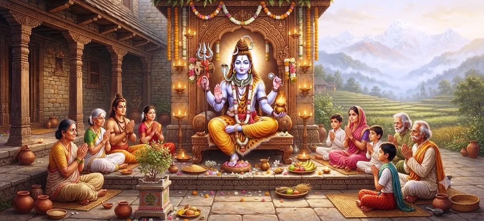

The Incarnation of Grihapati
Chapter 13 of the Shatarudra Samhita presents the sacred incarnation of Grihapati and continues the sequence of extraordinary divine manifestations of Lord Shiva.
The name Grihapati carries the meaning of the lord or master of the household. In this sacred context, the household is not viewed merely as a physical dwelling but as a place where responsibility, devotion, discipline, protection, and spiritual values can be cultivated.
The incarnation therefore provides an important transition in the Shatarudra Samhita. After the extraordinary manifestation of Sharabha, the narrative turns toward a divine form connected with sacred household life and the protection of dharma.
Chapter 13 Highlights
The Grihapati Incarnation
Introduces Grihapati as an important divine manifestation associated with Lord Shiva.
Sacred Household
Connects divine presence with the sacred responsibilities and values of household life.
Protection
Emphasizes the protective dimension of divine power and righteous responsibility.
Sacred Discipline
Shows how discipline and devotion can transform ordinary responsibilities into spiritual practice.
Devotion
Highlights sincere devotion and the recognition of the Divine within daily life.
Glory of Shiva
Reveals another dimension of the limitless manifestations of Lord Shiva.
Core Topics in This Chapter
- 01 The Meaning of Grihapati →
- 02 The Divine Manifestation of Grihapati →
- 03 The Sacred Meaning of Household Life →
- 04 Devotion and Spiritual Discipline →
- 05 Protection and Responsibility →
- 06 Grihapati and the Preservation of Dharma →
- 07 The Divine Presence Within the Home →
- 08 Spiritual Significance of Grihapati →
- 09 The Message for Devotees →
- 10 The Continuation in Part 2 →
The Meaning of Grihapati
The term Grihapati carries the sense of the lord or master of the household. The name places attention upon the home as a sphere of responsibility, protection, discipline, and sacred duty.
In the spiritual understanding of household life, a home is more than a physical structure. It can become a place where dharma is practiced through conduct, service, devotion, compassion, and responsibility toward others.
The Divine Manifestation of Grihapati
Grihapati is presented as another sacred manifestation in the sequence of Shiva's divine incarnations. The chapter shifts the emphasis from the extraordinary power displayed in the Sharabha narrative toward the spiritual importance of the household.
This manifestation shows that the Divine can be contemplated not only through awe-inspiring cosmic forms but also through sacred responsibilities that are part of ordinary human life.
The Sacred Meaning of Household Life
Household life can become a field of spiritual practice when daily responsibilities are performed with sincerity and awareness. Caring for family, protecting dependants, maintaining integrity, and serving others can all become expressions of dharma.
The idea represented by Grihapati therefore gives spiritual value to responsibilities that might otherwise appear ordinary. The home can become a place where devotion is expressed through action.
Devotion and Spiritual Discipline
Devotion is not limited to ritual worship. It can also be expressed through disciplined conduct, truthful speech, service, patience, compassion, and respect for the responsibilities entrusted to us.
Grihapati can therefore be contemplated as a reminder that spiritual discipline must enter everyday life. A devotee's conduct within the home is itself an important expression of spiritual understanding.
Protection and Responsibility
Protection is one of the important responsibilities associated with household life. Those who hold responsibility for a family or community are expected to act with courage, wisdom, restraint, and compassion.
The Grihapati principle teaches that authority should not become domination. True responsibility is expressed through care, protection, justice, and service.
Grihapati and the Preservation of Dharma
Dharma is preserved not only through great public acts but also through countless small decisions made within daily life. Truthfulness, fairness, restraint, kindness, and responsibility strengthen the foundation upon which a household rests.
The Grihapati manifestation can therefore be understood within the wider principle that sacred order begins with righteous conduct. A disciplined home can become a foundation for a disciplined society.
The Divine Presence Within the Home
The sacred understanding of Grihapati invites devotees to recognize the presence of the Divine in the spaces of everyday life. Prayer, remembrance of Shiva, respectful relationships, and acts of service can turn a household into a place of spiritual awareness.
The home becomes sacred not simply because of its physical arrangement but because of the values practiced within it.
Spiritual Significance of Grihapati
Spiritually, Grihapati represents the recognition that divine consciousness can be present in ordinary responsibilities. The sacred does not always appear in extraordinary circumstances. It can also be encountered through patience, care, duty, and sincere service.
This perspective gives spiritual dignity to household responsibilities and encourages devotees to see daily life as an opportunity for disciplined devotion.
The Message for Devotees
The central lesson associated with Grihapati is that spiritual life does not require abandoning responsibility. Instead, responsibility itself can become a path of spiritual growth when it is guided by dharma and devotion.
Devotees are encouraged to cultivate honesty, patience, compassion, self-control, and service within their homes. These qualities create an environment in which spiritual awareness can grow naturally.
The Continuation in Part 2
The account of Grihapati continues into the following chapter. Part 2 carries the narrative forward and allows the sacred account of this divine manifestation to be explored further.
Readers who wish to continue the sacred journey of the Shatarudra Samhita can proceed directly to The Incarnation of Grihapati — Part 2.
Key Teachings of Chapter 13
Sacred Household
The household can become a field of spiritual practice when daily duties are performed with devotion.
Devotion Through Duty
Sincere responsibility can itself become an expression of devotion.
Protection
True responsibility includes protecting those entrusted to our care.
Dharma
Righteous conduct within the home strengthens the foundation of social and spiritual order.
Discipline
Spiritual discipline begins with consistent conduct in everyday life.
Divine Presence
The Divine can be remembered and experienced through ordinary acts of care and service.
Spiritual Reflection
The Incarnation of Grihapati invites us to look at ordinary responsibilities through a spiritual lens. A household is shaped not only by walls, possessions, or routines, but by the values practiced within it. When truthfulness, patience, compassion, service, and devotion guide family life, everyday actions can become forms of spiritual practice. Grihapati reminds devotees that divine awareness does not have to be separated from daily responsibilities. The care of others, the protection of the vulnerable, the fulfillment of duty, and the maintenance of harmony can all become expressions of devotion. The sacred can therefore be discovered not only in temples and rituals but also in the sincere way we live, serve, and care for those around us.
Living the Message of Chapter 13
The message of Grihapati can be practiced by treating daily responsibilities as opportunities for service. Caring for family members, keeping promises, speaking truthfully, managing responsibilities with discipline, and helping those in need are practical expressions of dharma.
A devotee can also create a more sacred home environment through regular remembrance of Shiva, prayer, respectful speech, and peaceful conduct. The purpose is not to make ordinary life disappear, but to make ordinary life more conscious and compassionate.
In this way, the household can become a place where spiritual values are practiced every day rather than remembered only during special occasions.
Key Spiritual Concepts
The lord or master of the household, presented here as a sacred manifestation associated with Lord Shiva.
The household or home, understood not merely as a physical place but as a sphere of responsibility and spiritual practice.
Righteous conduct and responsibility that sustain harmony and sacred order.
Sincere remembrance, reverence, service, and dedication toward the Divine.
The conscious fulfillment of duties toward family, society, and those entrusted to our care.
Consistent practice of values such as truthfulness, self-control, patience, compassion, and service.
Chapter Summary
Shatarudra Samhita Chapter 13 presents The Incarnation of Grihapati and continues the sequence of sacred manifestations of Lord Shiva. The name Grihapati points toward the lord or master of the household and introduces a spiritual perspective on domestic responsibility. The chapter can be contemplated as a reminder that the Divine is not present only in extraordinary manifestations or formal places of worship. Divine awareness can also be cultivated through daily duty, protection, service, discipline, compassion, and devotion. The household becomes spiritually meaningful when its members practice dharma through their conduct toward one another. Grihapati therefore represents an important dimension of Shiva's divine presence, connecting spiritual values with ordinary human responsibilities. The narrative continues in the following chapter, The Incarnation of Grihapati — Part 2.
Frequently Asked Questions
① What is the subject of Shatarudra Samhita Chapter 13?
Chapter 13 presents The Incarnation of Grihapati and continues the sacred sequence of divine manifestations associated with Lord Shiva.
② Who is Grihapati?
Grihapati is a sacred manifestation associated with Lord Shiva and represents the divine principle connected with the household and its responsibilities.
③ What does Grihapati mean?
Grihapati means the lord or master of the household. The concept also carries the ideas of responsibility, protection, discipline, and sacred domestic life.
④ What is the spiritual significance of Grihapati?
Grihapati can be contemplated as a symbol of divine presence within daily responsibility, protection, devotion, discipline, and righteous household life.
⑤ How can the message of Grihapati be practiced?
By practicing truthfulness, responsibility, patience, compassion, service, self-control, and devotion in everyday household life.
⑥ What chapter comes after The Incarnation of Grihapati?
The next chapter is The Incarnation of Grihapati — Part 2.
“When duty is performed with devotion, the ordinary home becomes a place where the presence of the Divine can be remembered and experienced.”
Continue Through Shatarudra Samhita
Chapter 13 presents The Incarnation of Grihapati. Continue to the next chapter to explore The Incarnation of Grihapati — Part 2.